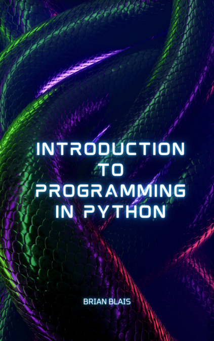

Introduction to Programming in Python


Acknowledgments
I want to thank the Bryant College AI and Robotics class of Fall 2003 for having the patience with me teaching the course without this guide. Their good work has motivated me to write it. The Bryant University AI and Robotics class of Fall 2004 allowed me to clean up many of the exercises, and make the text more clear. The AI and Robotics class of 2011 motivated me to do many improvements to this document.
Also, now I want to thank the AI and Robotics class of Fall 2021 and Ryan Smith for motivating me to translate this to a slightly more modern platform.
Preface: Why Python?
There are several reasons for me choosing Python as the language/environment for introducing programming, some of them practical, some pedagogical, and some personal.
Python is free, as in “free oil changes”. I believe this is an important consideration for teaching any language. If it is accessible, then students are more likely to use it beyond the particular class that is being taught.
Python is free, as in “free speech”. This allows me to distribute freely anything I develop with Python, and any changes to Python that I make for my own purposes.
Python is available both for Windows, Linux, and the Mac. Since I work in both a Mac and a Linux environment, but am surrounded by students who only know MS Windows, this is a personal reason for me using it.
Python is simple. It’s syntax is extremely clean. There are no variable declarations or pointers. There are no segmentation faults or other memory errors.
Python is interpreted. This makes it easy to develop programs, and more importantly to debug programs.
Python is flexible. You can do dynamic heterogeneous arrays, structures, lists, objects and classes with a simple syntax. You can do both procedural and object-oriented programming (or a mixture) if you want.
This guide grew out of my experience teaching an Artificial Intelligence and Robotics course at Bryant University (formerly Bryant College). The course includes students from many majors, not many of which are computer oriented. As such, Python was a choice (over the traditional Lisp for AI) that would have a chance to be used by students in other contexts outside of the class.
As far as other possible languages for the course, C or Java are obvious choices, especially given how much support material there is out there (I wouldn’t have had to write this guide at all), but I believe that certain language structures, like variable declarations and pointers (in C), get in the way of the concepts I want to teach. Visual Basic is a possibility, but I don’t know that language as well as others, I don’t believe it exists currently for Linux, and I don’t believe it has the simplicity and power of Python. Lisp is the most common choice for an AI class, but as noted above the course I teach is not a traditional Computer Science AI course. Pascal is not portable enough, and Prolog is just too weird. :)
Since running my classes with Python for many years now, I feel I have accomplished things in this language that would be very difficult, or impossible, to do with a different language. Such things include using Python to program Lego Mindstorms robots, writing numerical simulators with near-mathematical notation, and flexibly dealing with many different types of data. I have yet to have a project where Python wasn’t the easiest language to develop that project.
License
This website is (and will always be) free to use, and is licensed under the Creative Commons Attribution-NonCommercial-NoDerivs 4.0 License.